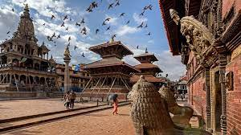
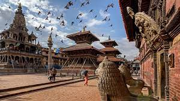

Patan Durbar Square is a historic square located in the city of Lalitpur, Nepal, also known as Patan. It is a UNESCO World Heritage Site and is known for its rich cultural and historical significance
The square was originally built during the 3rd century BC by the Kirat dynasty, and much of the architecture that exists today was constructed in the 17th and 18th centuries under the rule of the Malla dynasty. Patan Durbar Square was the royal palace of the Patan Kingdom and served as the administrative center of the city for many centuries. Patan Durbar Square is home to several magnificent palaces, temples, and courtyards, each wit itsown unique architectural style. The most significant building in the square is the Krishna Mandir,a beautiul temple dedicated to Lord Krishna, which was built in the 17th century. Other notablestructures in the square include the Golden Temple, the Taleju Temple, and the Bhimsen Temple.
The square is also home to several beautiful stone carvings, statues, and other artistic creations. One of the most popular attractions is the stunning stone water spouts, or hitti, which are adorned with intricate carvings of various deities and mythical creatures. Patan Durbar Square is also an important cultural center, and visitors can witness several religious festivals and ceremonies throughout the year. One of the most popular festivals is the Rato Machhindranath Jatra, which is held in April or May and involves a procession of a large chariot carrying the statue of the god Rato Machhindranath.
Overall, Patan Durbar Square is an important cultural and historical site in Nepal, and a must-visit destination for those interested in Nepalese architecture, history, and culture.